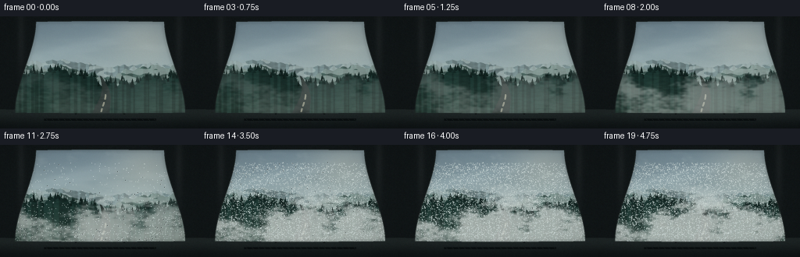
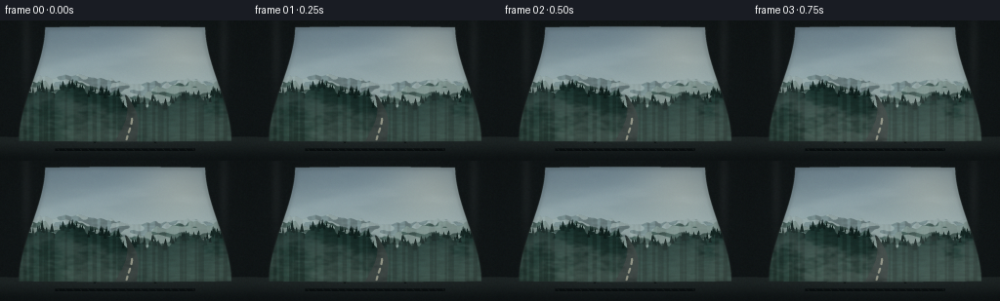

CODING AGENTS AS PIXEL WORLD MODELS
traex/DeepSeek-V4.1-Flash · phygen_114
点击播放 · 原生 RGB 像素
逐轮保存的候选
回放视频、检查图与代码变化。
每份候选均可单独播放。实际图片检查记录在下方工具轨迹中。
候选 01播放与检查图
点击播放 · 原生 RGB 像素


展开代码变化
--- 上一保存版本
+++ 本次保存版本
@@ -0,0 +1,549 @@
+from pathlib import Path
+
+import cv2
+import numpy as np
+from scipy.ndimage import gaussian_filter, map_coordinates
+
+import artifact_io
+
+
+CASE_DIR = Path(__file__).resolve().parent
+WIDTH = 256
+HEIGHT = 144
+SCALE = 3
+W = WIDTH * SCALE
+H = HEIGHT * SCALE
+FRAMES = 20
+FPS = 4.0
+RNG = np.random.default_rng(481516)
+
+
+def smoothstep(a, b, x):
+ t = np.clip((x - a) / (b - a), 0.0, 1.0)
+ return t * t * (3.0 - 2.0 * t)
+
+
+def normalize(a):
+ lo, hi = np.percentile(a, (1.0, 99.0))
+ return np.clip((a - lo) / (hi - lo + 1e-6), 0.0, 1.0)
+
+
+def colorize(colors, weights):
+ colors = np.asarray(colors, dtype=np.float32)
+ weights = np.asarray(weights, dtype=np.float32)
+ return np.sum(colors[None, None, :] * weights[:, :, None], axis=2)
+
+
+def noise_texture(shape, sigma_y, sigma_x, seed):
+ local_rng = np.random.default_rng(seed)
+ n = local_rng.standard_normal(shape).astype(np.float32)
+ n = gaussian_filter(n, sigma=(sigma_y, sigma_x), mode="wrap")
+ return normalize(n)
+
+
+def sample_wrapped(texture, xx, yy):
+ xx, yy = np.broadcast_arrays(
+ np.asarray(xx, dtype=np.float32),
+ np.asarray(yy, dtype=np.float32),
+ )
+ return map_coordinates(
+ texture,
+ [yy, xx],
+ order=1,
+ mode="wrap",
+ prefilter=False,
+ )
+
+
+def ridge_profile(base, amplitude, seed, jaggedness=1.0):
+ local_rng = np.random.default_rng(seed)
+ x = np.linspace(0.0, 1.0, W, dtype=np.float32)
+ profile = np.zeros(W, dtype=np.float32)
+ components = [
+ (0.55, 1.2, 0.3),
+ (0.25, 2.8, 1.4),
+ (0.13, 6.5, 2.0),
+ (0.07, 13.0, 0.8),
+ ]
+ for weight, frequency, phase in components:
+ profile += weight * np.sin(
+ (frequency * 2.0 * np.pi * x)
+ + phase
+ + local_rng.uniform(-0.5, 0.5)
+ )
+ rough = local_rng.standard_normal(W).astype(np.float32)
+ rough = gaussian_filter(rough, sigma=5.0, mode="wrap")
+ profile += jaggedness * 0.42 * normalize(rough)
+ profile = normalize(profile)
+ return base - amplitude * profile
+
+
+def fill_mountain(scene, ridge, colors, seed, snow=False):
+ y = np.arange(H, dtype=np.float32)[:, None]
+ x = np.arange(W, dtype=np.float32)[None, :]
+ inside = y >= ridge[None, :]
+
+ slope = np.gradient(gaussian_filter(ridge, 2.0))
+ shade = np.clip(0.5 - slope * 2.2, 0.22, 0.82)
+ depth = np.clip((y - ridge[None, :]) / (0.34 * H), 0.0, 1.0)
+ texture = noise_texture((H, W), 2.0, 8.0, seed + 41)
+ detail = 0.86 + 0.18 * texture
+
+ near = np.asarray(colors[0], dtype=np.float32)
+ far = np.asarray(colors[1], dtype=np.float32)
+ mountain = (
+ near[None, None, :] * (1.0 - depth[:, :, None])
+ + far[None, None, :] * depth[:, :, None]
+ )
+ mountain *= (0.76 + 0.34 * shade[None, :, None]) * detail[:, :, None]
+
+ # Broken snowfields follow the high side of the ridge.
+ if snow:
+ snow_noise = noise_texture((H, W), 5.0, 11.0, seed + 73)
+ ridge_band = (y - ridge[None, :])
+ snow_mask = (
+ (ridge_band > 1.0)
+ & (ridge_band < 0.12 * H)
+ & (snow_noise > 0.50)
+ & (depth < 0.43)
+ )
+ snow_mask = gaussian_filter(snow_mask.astype(np.float32), 1.1) > 0.25
+ mountain = np.where(
+ snow_mask[:, :, None],
+ mountain * 0.54 + np.array([190.0, 204.0, 201.0]) * 0.46,
+ mountain,
+ )
+
+ alpha = inside.astype(np.float32)
+ alpha = gaussian_filter(alpha, 0.55)[:, :, None]
+ scene[:] = scene * (1.0 - alpha) + mountain * alpha
+ return inside
+
+
+def draw_tree_line(scene, ridge, x_start, x_end, density, base_size, seed):
+ local_rng = np.random.default_rng(seed)
+ count = int((x_end - x_start) * W / 5.0 * density)
+ for _ in range(count):
+ x = int(local_rng.uniform(x_start, x_end) * W)
+ ridge_y = ridge[np.clip(x, 0, W - 1)]
+ size = base_size * local_rng.uniform(0.55, 1.25)
+ y = int(ridge_y + local_rng.uniform(-1.0, 5.0) * SCALE)
+ height = int(local_rng.uniform(5.0, 12.0) * SCALE * size)
+ half = max(1, int(height * local_rng.uniform(0.19, 0.28)))
+ color = tuple(
+ int(v)
+ for v in np.array([22, 39, 36]) * local_rng.uniform(0.72, 1.05)
+ )
+ points = np.array(
+ [[x, y - height], [x - half, y], [x + half, y]],
+ dtype=np.int32,
+ )
+ cv2.fillConvexPoly(scene, points, color, lineType=cv2.LINE_AA)
+
+
+def draw_valley_road(scene, t):
+ ys = np.linspace(0.535, 0.865, 120)
+ centers = (
+ 0.505
+ + 0.020 * np.sin((ys - 0.54) * 12.0)
+ + 0.070 * np.maximum(ys - 0.54, 0.0) ** 1.5
+ )
+ widths = np.linspace(1.4, 22.0, len(ys)) * SCALE
+ for y, cx, width in zip(ys, centers, widths):
+ py = int(y * H)
+ half = max(1, int(width * 0.5))
+ px = int(cx * W)
+ road_color = (44, 53, 51)
+ cv2.line(scene, (px - half, py), (px + half, py), road_color, 2, cv2.LINE_AA)
+
+ # Faint center marking and narrow shoulders give the valley a believable scale.
+ for start, end in ((0.70, 0.74), (0.77, 0.80), (0.825, 0.85)):
+ mask = (ys >= start) & (ys <= end)
+ for y, cx in zip(ys[mask], centers[mask]):
+ cv2.circle(
+ scene,
+ (int(cx * W), int(y * H)),
+ max(1, int(1.0 * SCALE)),
+ (137, 139, 124),
+ -1,
+ cv2.LINE_AA,
+ )
+
+
+def make_sky(t):
+ y = np.linspace(0.0, 1.0, H, dtype=np.float32)[:, None, None]
+ y2d = np.linspace(0.0, 1.0, H, dtype=np.float32)[:, None]
+ top = np.array([91, 111, 124], dtype=np.float32)
+ mid = np.array([151, 169, 170], dtype=np.float32)
+ horizon = np.array([207, 204, 190], dtype=np.float32)
+
+ a = smoothstep(0.0, 0.62, y)
+ sky = top[None, None, :] * (1.0 - a) + mid[None, None, :] * a
+ b = smoothstep(0.47, 0.72, y)
+ sky = sky * (1.0 - b) + horizon[None, None, :] * b
+
+ xx = np.arange(W, dtype=np.float32)[None, :]
+ yy = np.arange(H, dtype=np.float32)[:, None]
+ glow = np.exp(
+ -(
+ ((xx - 0.73 * W) / (0.18 * W)) ** 2
+ + ((yy - 0.19 * H) / (0.24 * H)) ** 2
+ )
+ )
+ glow = glow[:, :, None]
+ sun = np.array([234, 222, 191], dtype=np.float32)
+ sky = sky * (1.0 - 0.26 * glow) + sun * (0.26 * glow)
+
+ cloud = noise_texture((H, W), 18.0, 65.0, 901)
+ cloud2 = noise_texture((H, W), 6.0, 22.0, 902)
+ cloud_field = 0.72 * cloud + 0.28 * cloud2
+ cloud_alpha = smoothstep(0.50, 0.78, cloud_field)
+ cloud_alpha *= (0.09 + 0.05 * t) * (1.0 - smoothstep(0.50, 0.68, y2d))
+ cloud_color = np.array([190, 199, 197], dtype=np.float32)
+ sky = sky * (1.0 - cloud_alpha[:, :, None]) + cloud_color * cloud_alpha[:, :, None]
+ return np.clip(sky, 0, 255).astype(np.float32)
+
+
+def add_fog(scene, t, fog_noise):
+ y = np.linspace(0.0, 1.0, H, dtype=np.float32)[:, None]
+ xx = np.arange(W, dtype=np.float32)[None, :]
+ yy = np.arange(H, dtype=np.float32)[:, None]
+ growth = smoothstep(0.0, 1.0, t)
+
+ coarse, medium, fine = fog_noise
+ shift_x = (7.0 + 72.0 * t) * SCALE
+ rise_y = (-2.0 - 18.0 * t) * SCALE
+ sx = xx + shift_x
+ sy = yy + rise_y
+ f1 = sample_wrapped(coarse, sx * 0.94, sy * 0.82)
+ f2 = sample_wrapped(medium, sx * 1.17 + 47 * SCALE, sy * 1.04 + 23 * SCALE)
+ f3 = sample_wrapped(fine, sx * 1.45 + 91 * SCALE, sy * 1.32 + 61 * SCALE)
+ field = 0.53 * f1 + 0.31 * f2 + 0.16 * f3
+
+ valley_bias = 0.19 * smoothstep(0.47, 0.79, y)
+ veil = smoothstep(0.43, 0.71, field + valley_bias)
+ valley = smoothstep(0.35, 0.64, y)
+ alpha = (0.10 + 0.62 * growth) * valley * veil
+
+ upper_bias = 0.10 * smoothstep(0.18, 0.47, y)
+ upper_veil = smoothstep(0.50, 0.75, field + upper_bias)
+ alpha += (0.018 + 0.15 * growth) * upper_veil
+
+ # A denser front reaches the glass from the lower-left during the timelapse.
+ front = np.exp(
+ -(
+ ((xx - (0.20 + 0.30 * t) * W) / (0.36 * W)) ** 2
+ + ((yy - (0.79 - 0.08 * t) * H) / (0.26 * H)) ** 2
+ )
+ )
+ alpha += 0.22 * growth * front * smoothstep(0.43, 0.70, field)
+ alpha = np.clip(alpha, 0.0, 0.78)
+
+ fog_rgb = np.stack(
+ [
+ 184.0 + 10.0 * smoothstep(0.25, 0.72, y),
+ 195.0 + 5.0 * smoothstep(0.25, 0.72, y),
+ 194.0 + 2.0 * smoothstep(0.25, 0.72, y),
+ ],
+ axis=2,
+ )
+ fog_rgb = np.broadcast_to(fog_rgb, (H, W, 3))
+ scene[:] = scene * (1.0 - alpha[:, :, None]) + fog_rgb * alpha[:, :, None]
+
+
+def windshield_mask():
+ y = np.arange(H, dtype=np.float32)[:, None]
+ x = np.arange(W, dtype=np.float32)[None, :]
+ yn = y / H
+ xn = x / W
+
+ top = 0.043 + 0.012 * (np.abs(xn - 0.5) / 0.5) ** 2.0
+ bottom = 0.862 - 0.006 * (np.abs(xn - 0.5) / 0.5) ** 2.0
+ left = 0.075 + 0.105 * (1.0 - smoothstep(0.04, 0.86, yn))
+ right = 1.0 - left
+
+ mask = (
+ (yn > top)
+ & (yn < bottom)
+ & (xn > left)
+ & (xn < right)
+ )
+ return gaussian_filter(mask.astype(np.float32), 0.7)
+
+
+def make_cabin(scene, glass, t):
+ y = np.arange(H, dtype=np.float32)[:, None]
+ x = np.arange(W, dtype=np.float32)[None, :]
+ yn = y / H
+ xn = x / W
+
+ # Charcoal interior with a faint woven-plastic grain.
+ cabin_noise = noise_texture((H, W), 1.0, 1.0, 611)
+ cabin = np.zeros((H, W, 3), dtype=np.float32)
+ cabin[:] = np.array([20, 25, 26], dtype=np.float32)
+ cabin *= (0.83 + 0.20 * cabin_noise[:, :, None])
+
+ # Rubber gasket and a narrow highlight around the windshield.
+ gasket = np.clip(gaussian_filter(glass, 2.0) - glass, 0.0, 1.0)
+ gasket = gasket * 2.4
+ highlight = gasket[:, :, None] * np.array([49, 59, 57], dtype=np.float32)
+ cabin = cabin * (1.0 - np.clip(gasket[:, :, None], 0, 0.7)) + highlight * 0.7
+
+ # Dashboard catches a little cold skylight.
+ dash_top = 0.836 + 0.011 * np.cos((xn - 0.48) * 5.1)
+ dash = yn > dash_top
+ dash_grad = smoothstep(0.84, 1.0, yn)
+ dash_color = (
+ np.array([34, 41, 41], dtype=np.float32)[None, None, :] * (1.0 - dash_grad[:, :, None])
+ + np.array([18, 23, 24], dtype=np.float32)[None, None, :] * dash_grad[:, :, None]
+ )
+ dash_color = np.broadcast_to(dash_color, (H, W, 3)).copy()
+ dash_color *= (0.88 + 0.14 * cabin_noise[:, :, None])
+ cabin = np.where(dash[:, :, None], dash_color, cabin)
+
+ # Long defroster vent under the glass.
+ vent_y = 0.912
+ vent = (
+ (yn > vent_y)
+ & (yn < vent_y + 0.018)
+ & (xn > 0.22)
+ & (xn < 0.78)
+ )
+ cabin[vent] = np.array([11, 15, 16], dtype=np.float32)
+ for vx in np.linspace(0.23, 0.77, 19):
+ x0 = int(vx * W)
+ y0 = int((vent_y + 0.004) * H)
+ y1 = int((vent_y + 0.014) * H)
+ cv2.line(cabin, (x0, y0), (x0 + int(0.008 * W), y1), (45, 53, 51), 1, cv2.LINE_AA)
+
+ # Resting wipers create an immediate automotive read without hiding the view.
+ for direction, offset in ((-1.0, 0.38), (1.0, 0.62)):
+ pts = []
+ for s in np.linspace(0.0, 1.0, 34):
+ px = offset * W + direction * (s ** 1.5) * 0.22 * W
+ py = H * (0.866 - 0.034 * np.sin(s * np.pi * 0.92) - 0.010 * s)
+ pts.append([int(px), int(py)])
+ pts = np.asarray(pts, dtype=np.int32)
+ cv2.polylines(cabin, [pts], False, (8, 11, 12), 5, cv2.LINE_AA)
+ cv2.polylines(cabin, [pts], False, (31, 37, 37), 2, cv2.LINE_AA)
+
+ # Slight mirror-dark edge and cool reflection on the A-pillars.
+ edge_glow = np.exp(-((yn - 0.18) / 0.35) ** 2)
+ side_glow = (
+ np.exp(-((xn - 0.105) / 0.018) ** 2)
+ + np.exp(-((xn - 0.895) / 0.018) ** 2)
+ )
+ pillar_light = np.clip(side_glow * edge_glow, 0, 1) * 9.0
+ cabin += pillar_light[:, :, None]
+
+ scene[:] = scene * glass[:, :, None] + cabin * (1.0 - glass[:, :, None])
+
+
+def glass_condensation(scene, t, glass, droplets):
+ progress = smoothstep(0.31, 1.0, t)
+ if progress <= 0.001:
+ return scene
+
+ y = np.linspace(0.0, 1.0, H, dtype=np.float32)[:, None]
+ x = np.linspace(0.0, 1.0, W, dtype=np.float32)[None, :]
+ low = smoothstep(0.42, 0.88, y)
+ left = smoothstep(0.44, 0.06, x)
+ right = smoothstep(0.56, 0.94, x)
+ edge = np.clip(0.67 * low + 0.18 * left + 0.15 * right, 0, 1)
+
+ field = noise_texture((H, W), 8.0, 15.0, 1207)
+ fine = noise_texture((H, W), 1.3, 1.3, 1208)
+ contact = smoothstep(0.30, 0.76, field + 0.38 * edge + 0.11 * fine)
+ mist_alpha = (0.29 * progress) * contact * (0.35 + 0.65 * edge)
+
+ blurred = cv2.GaussianBlur(scene, (0, 0), 1.15)
+ cool = blurred * np.array([0.95, 0.985, 1.0], dtype=np.float32)
+ pearl = np.array([209, 218, 216], dtype=np.float32)
+ fogged = cool * (1.0 - 0.40 * mist_alpha[:, :, None]) + pearl * (0.40 * mist_alpha[:, :, None])
+ scene[:] = scene * (1.0 - mist_alpha[:, :, None]) + fogged * mist_alpha[:, :, None]
+
+ # Fine condensation appears first near the lower edge.
+ active = progress > droplets["activation"]
+ active &= droplets["activation"] < (progress + 0.28)
+ for i in np.flatnonzero(active):
+ px = int(droplets["x"][i])
+ py = int(droplets["y"][i])
+ radius = int(droplets["radius"][i])
+ strength = float(droplets["strength"][i]) * smoothstep(
+ 0.0, 0.24, progress - droplets["activation"][i]
+ )
+ if radius <= 1:
+ cv2.circle(scene, (px, py), 1, (205, 215, 213), -1, cv2.LINE_AA)
+ continue
+ cv2.circle(scene, (px, py), radius, (122, 139, 141), -1, cv2.LINE_AA)
+ cv2.circle(scene, (px, py), radius, (202, 214, 213), 1, cv2.LINE_AA)
+ cv2.circle(
+ scene,
+ (px - max(1, radius // 3), py - max(1, radius // 3)),
+ max(1, radius // 3),
+ tuple(int(v) for v in np.array([229, 235, 231]) * strength),
+ -1,
+ cv2.LINE_AA,
+ )
+
+ # A few slow rivulets remain sharp and give the glass a wet surface.
+ rivulet_alpha = smoothstep(0.65, 0.95, t)
+ if rivulet_alpha > 0:
+ for x0, y0, length, curve in droplets["rivulets"]:
+ points = []
+ for s in np.linspace(0.0, 1.0, 12):
+ px = x0 + curve * np.sin(s * 2.2) * 5.0
+ py = y0 + length * s
+ points.append([int(px), int(py)])
+ pts = np.asarray(points, dtype=np.int32)
+ overlay = scene.copy()
+ cv2.polylines(overlay, [pts], False, (214, 221, 218), 2, cv2.LINE_AA)
+ scene[:] = scene * (1.0 - 0.25 * rivulet_alpha) + overlay * (0.25 * rivulet_alpha)
+ return scene
+
+
+def glass_optics(scene, glass, t):
+ y = np.arange(H, dtype=np.float32)[:, None]
+ x = np.arange(W, dtype=np.float32)[None, :]
+
+ # Faint diagonal reflection and old wiper arcs in the glass.
+ diagonal = smoothstep(0.0, 0.13, np.abs((x * 0.32 + y * 0.95) - 0.39 * H))
+ reflection = np.exp(-((diagonal - 0.0) / 0.14) ** 2) * 0.0
+ band = np.exp(-(((x * 0.28 + y) - 0.47 * H) / (0.08 * H)) ** 2)
+ band *= smoothstep(0.10, 0.55, 1.0 - x / W)
+ scene += (band * (5.5 + 1.5 * t))[:, :, None] * np.array([0.70, 0.82, 0.86])
+
+ # Windshield vignette and edge grime.
+ edge = 1.0 - gaussian_filter(glass, 7.0)
+ edge = np.clip(edge * 2.0, 0.0, 0.34)
+ scene *= (1.0 - 0.23 * edge[:, :, None])
+
+ # Very fine dust keeps the view from looking synthetic.
+ dust = noise_texture((H, W), 0.7, 0.7, 1471)
+ dust = (dust - 0.5) * 4.0
+ scene += dust[:, :, None] * glass[:, :, None]
+ return scene
+
+
+def finish_frame(scene, glass, t):
+ # Gentle cool shadows / warm highlights and cinematic contrast.
+ lum = np.sum(scene * np.array([0.2126, 0.7152, 0.0722]), axis=2, keepdims=True)
+ scene += (scene - lum) * 0.075
+ scene = np.clip((scene - 6.0) * 1.035 + 4.0, 0, 255)
+
+ yy = np.linspace(-1.0, 1.0, H, dtype=np.float32)[:, None]
+ xx = np.linspace(-1.0, 1.0, W, dtype=np.float32)[None, :]
+ vignette = 1.0 - 0.14 * np.clip((xx * xx * 0.74 + yy * yy * 0.52) - 0.28, 0, 1)
+ scene *= vignette[:, :, None]
+
+ frame = cv2.resize(scene, (WIDTH, HEIGHT), interpolation=cv2.INTER_AREA)
+ frame = np.clip(frame + RNG.normal(0.0, 0.58, frame.shape), 0, 255).astype(np.uint8)
+ return frame
+
+
+def build_droplets():
+ n_fine = 5200
+ x = RNG.uniform(0.07, 0.93, n_fine) * W
+ y = RNG.uniform(0.16, 0.88, n_fine) * H
+ radius = RNG.choice([1, 1, 1, 2], size=n_fine, p=[0.42, 0.31, 0.18, 0.09])
+ low_bias = smoothstep(0.36, 0.86, y / H)
+ edge_bias = np.maximum(
+ smoothstep(0.34, 0.07, x / W),
+ smoothstep(0.66, 0.93, x / W),
+ )
+ activation = 0.30 + 0.47 * RNG.random(n_fine) - 0.13 * low_bias - 0.06 * edge_bias
+ activation = np.clip(activation, 0.29, 0.88)
+ strength = RNG.uniform(0.74, 1.0, n_fine)
+
+ rivulets = []
+ for _ in range(18):
+ rx = RNG.uniform(0.10, 0.90) * W
+ ry = RNG.uniform(0.56, 0.80) * H
+ length = RNG.uniform(0.025, 0.12) * H
+ curve = RNG.uniform(-1.0, 1.0)
+ rivulets.append((rx, ry, length, curve))
+ return {
+ "x": x,
+ "y": y,
+ "radius": radius,
+ "activation": activation,
+ "strength": strength,
+ "rivulets": rivulets,
+ }
+
+
+def generate():
+ glass = windshield_mask()
+ far_ridge = ridge_profile(0.455 * H, 0.074 * H, 91, 1.15)
+ mid_ridge = ridge_profile(0.545 * H, 0.140 * H, 191, 1.10)
+ near_ridge = ridge_profile(0.620 * H, 0.164 * H, 291, 1.30)
+
+ fog_noise = (
+ noise_texture((H, W), 32.0, 58.0, 801),
+ noise_texture((H, W), 13.0, 30.0, 802),
+ noise_texture((H, W), 3.8, 8.5, 803),
+ )
+ droplets = build_droplets()
+
+ frames = []
+ for i in range(FRAMES):
+ t = i / (FRAMES - 1)
+ scene = make_sky(t)
+
+ fill_mountain(
+ scene,
+ far_ridge,
+ ([104, 126, 129], [127, 145, 146]),
+ 101,
+ snow=True,
+ )
+ # Distance haze between the ranges.
+ haze = np.array([181, 194, 193], dtype=np.float32)
+ scene[:] = scene * 0.86 + haze * 0.14
+
+ fill_mountain(
+ scene,
+ mid_ridge,
+ ([66, 91, 86], [89, 111, 104]),
+ 201,
+ snow=True,
+ )
+ scene[:] = scene * 0.93 + np.array([143, 158, 153]) * 0.07
+
+ fill_mountain(
+ scene,
+ near_ridge,
+ ([29, 52, 48], [50, 72, 65]),
+ 301,
+ snow=False,
+ )
+ draw_tree_line(scene, near_ridge, 0.02, 0.98, 0.95, 0.78, 401)
+ draw_valley_road(scene, t)
+ add_fog(scene, t, fog_noise)
+
+ scene = glass_condensation(scene, t, glass, droplets)
+ scene = glass_optics(scene, glass, t)
+ make_cabin(scene, glass, t)
+ frame = finish_frame(scene, glass, t)
+ frames.append(frame)
+
+ frames = np.stack(frames, axis=0)
+ artifact_io.save(frames, CASE_DIR)
+
+ # A compact MP4 is useful for external playback, while the contract's PNG
+ # sequence and index.html remain the canonical artifacts.
+ writer = cv2.VideoWriter(
+ str(CASE_DIR / "fog_windshield.mp4"),
+ cv2.VideoWriter_fourcc(*"mp4v"),
+ FPS,
+ (WIDTH, HEIGHT),
+ )
+ if writer.isOpened():
+ for frame in frames:
+ writer.write(cv2.cvtColor(frame, cv2.COLOR_RGB2BGR))
+ writer.release()
+ return frames
+
+
+if __name__ == "__main__":
+ generate()
可观测工具轨迹
实际执行的命令与返回图片。
命令 1exit 0
/bin/bash -c "pwd && rg --files -g '"'!*__pycache__*'"' | sed -n '1,200p'"
命令 2exit 0
/bin/bash -c "sed -n '1,240p' prompt.txt"
命令 3exit 0
/bin/bash -c "sed -n '1,280p' GENERATION_RULES.md"
命令 4exit 0
/bin/bash -c 'cat task_spec.json'
命令 5exit 0
/bin/bash -c "git status --short && find . -maxdepth 2 -type f -printf '%p %s bytes\\n' | sort | sed -n '1,200p'"
命令 6exit 0
/bin/bash -c "sed -n '1,260p' artifact_io.py"
命令 7exit 0
/bin/bash -c "sed -n '1,260p' player_template.html"
命令 8exit 0
/bin/bash -c "python - <<'PY' import importlib.util for m in ['numpy','PIL','cv2','scipy','imageio','matplotlib']: print(m, bool(importlib.util.find_spec(m))) PY"
命令 9exit 0
/bin/bash -c 'command -v ffmpeg || true; command -v ffprobe || true'
命令 10exit 0
/bin/bash -c 'command -v chafa || true; command -v viu || true; command -v img2txt || true; command -v jp2 || true'
命令 11exit 1
/bin/bash -c 'python generate.py'
命令 12exit 1
/bin/bash -c 'python generate.py'
命令 13exit 1
/bin/bash -c 'python generate.py'
命令 14exit 1
/bin/bash -c 'python generate.py'
命令 15exit 0
/bin/bash -c 'python generate.py'
命令 16exit 0
/bin/bash -c "python - <<'PY'
from pathlib import Path
from PIL import Image
import numpy as np
for i in [0,5,10,15,19]:
a=np.asarray(Image.open(f'frames/{i:02d}.png').convert('RGB')).astype(float)
print(i, 'mean', np.round(a.mean((0,1)),1), 'std', round(float(a.std()),1), 'p1/50/99', np.round(np.percentile(a,[1,50,99]),1))
# pairwise change magnitude
ims=[np.asarray(Image.open(f'frames/{i:02d}.png')).astype(float) for i in range(20)]
for i in range(1,20):
print('delta',i,round(float(np.abs(ims[i]-ims[i-1]).mean()),2))
PY"命令 17exit 0
/bin/bash -c "python - <<'PY'
from PIL import Image
import numpy as np
chars=' .,:;irsXA253hMHGS#9B&@'
for idx in [0,10,19]:
im=Image.open(f'frames/{idx:02d}.png').convert('RGB').resize((80,36),Image.Resampling.LANCZOS)
a=np.asarray(im).astype(float)
lum=a@np.array([.2126,.7152,.0722])
print('\\nFRAME',idx)
for row in lum:
print(''.join(chars[min(len(chars)-1,int(v/256*len(chars)))] for v in row))
PY"命令 18exit 0
/bin/bash -c "python - <<'PY'
from pathlib import Path
from PIL import Image
import numpy as np, json, re
root=Path('.')
frames=sorted((root/'frames').glob('*.png'))
print('frame_count',len(frames))
print('sizes', sorted(set(Image.open(p).size for p in frames)))
print('modes', sorted(set(Image.open(p).mode for p in frames)))
z=np.load(root/'pixels.npz')['pixels']
print('npz',z.shape,z.dtype,int(z.min()),int(z.max()))
html=(root/'index.html').read_text()
print('html_bytes',len(html),'has_data',bool(re.search(r'const DATA=\\{',html)),'has_play', 'id=\"play\"' in html)
print('mp4_bytes',(root/'fog_windshield.mp4').stat().st_size)
print('inspection',Image.open(root/'inspection.png').size)
print('transition',Image.open(root/'transition_check.png').size)
PY"命令 19exit 0
/bin/bash -c "python - <<'PY'
import cv2, numpy as np
cap=cv2.VideoCapture('fog_windshield.mp4')
frames=[]
while True:
ok,im=cap.read()
if not ok: break
frames.append(im)
cap.release()
print('mp4_frames',len(frames),'size',frames[0].shape if frames else None)
ims=np.stack(frames)
print('mp4_delta_first_last',round(float(np.abs(ims[-1].astype(float)-ims[0].astype(float)).mean()),2))
print('mp4_bgr_mean',np.round(ims.mean((0,1,2)),1))
PY"命令 20exit 0
/bin/bash -c "python -m py_compile generate.py && python - <<'PY'
from pathlib import Path
import json, re
s=Path('index.html').read_text()
m=re.search(r'const DATA=(\\{.*?\\}),W=DATA\\.width', s, re.S)
assert m
data=json.loads(m.group(1))
assert data['width']==256 and data['height']==144 and data['frames']==20 and data['fps']==4.0
assert len(data['deltas'])==19
print('player_payload_ok', data['frames'], len(data['deltas']), data['caption'])
PY"命令 21exit 0
/bin/bash -c "ls -lh generate.py index.html pixels.npz fog_windshield.mp4 inspection.png transition_check.png frames | sed -n '1,40p'; git status --short -- ."
保存候选 1 份；完成命令 21 次；可验证图片返回 0 张。原始 API 响应与完整日志保留在本地。